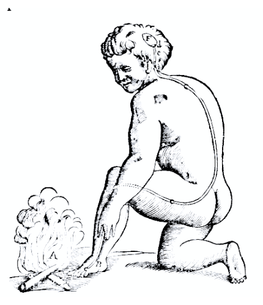

NOTAS DE ESTUDIO SOBRE LOS NATURALISTAS
Nota de estudio sobre Bain (1855): Instinto vs. adquisición
El trabajo de Bain, como el de Spencer, es fundamental para entender el panorama académico que eventualmente definiría las relaciones entre la etología clásica y la psicología conductual. El infame debate de la naturaleza contra la crianza que caracterizó el siglo XX no fue sino una secuela de lo que estuvo ocurriendo ya en el siglo XIX. Mientras que filósofos como Herbert Spencer (mejor conocido por su trabajo en teoría sociológica clásica) defendían la idea del instinto como reflejos compuestos innatos, otros como Alexander Bain argüían que no existen acciones innatas más que actividad muscular indiferenciada y reflejos simples.
El debate de la naturaleza contra la crianza es de gran pertinencia para una teoría de la conducta, ya que el estatus científico de la innatez ha tenido un impacto en la manera en que se han taxonomizado los tipos de conducta1. Normalmente se han aceptado la existencia de reflejos y patrones de acción fija innatos en conjunto con hábitos, operantes y otras categorías. Por ello, en esta nota no solo será de interés la idea del reflejo expresa en el trabajo de Bain (1855), sino también la de instinto y su contraparte, la adquisición.
Bain define preliminarmente el instinto como la habilidad no aprendida para ejecutar acciones de diversos tipos, en especial aquellas de utilidad para el animal. El autor ilustra la idea con el siguiente ejemplo:
“In it a living being possesses, at the moment of birth, powers of acting of the same nature as those subsequently conferred by experience and education. When a newly dropped calf stands up, walks, and sucks the udder of the cow, we call the actions instinctive” (Bain, 1855, p. 256).
En la medida en que los reflejos no son aprendidos, estos pueden considerarse una forma de instinto. Por ello, atendamos un momento a su idea de reflejo.
Bain identifica los reflejos con la actividad fisiológica iniciada por la médula espinal y el bulbo raquídeo. Identifica este eje con el dominio de los estímulos y acciones sin sensaciones. Aunque este eje nervioso pueda generar actividad en los mismos músculos que el cerebro, lo que hace la actividad de la médula-bulbo refleja es el hecho de que es automática y no merita consciencia.
Afirma Bain:
“The actions maintained by the cord and medulla oblongata resemble many of the true mental actions ; they actuate the same muscles, the same moveable parts, but inasmuch as they do not require feeling as an indispensable condition of their performance, they are excluded from the province, marked by our definition of mind” (Bain, 1855, p. 47).
Así, la acción refleja, también llamada automática, es aquella producida por la médula espinal y el bulbo raquídeo, cuya función principal es mantener estables a los procesos orgánicos. Esto se contrasta con la idea de un reflejo en Spencer (1896), el cual consiste en la relación entre una forma simple de irritación con una respuesta fisiológica simple o compleja. Si bien la idea de Bain implica irritación que lleva a la generación de ciertos movimientos, sean estos del músculo esquelético, cardiaco o liso, el énfasis radica en el centro nervioso de organización de esta actividad.
Dentro de los tipos de acción refleja o automática, Bain colecciona los siguientes:
Otros ejemplos de reflejos más clásicos son igualmente incluídos, como los que se han venido discutiendo desde los tiempos de Descartes, tal y como el reflejo de retirada nociceptivo (Figura 1)2. Este reflejo consiste, en resumidas cuentas, en la retirada de una extremidad ante el contacto con un estímulo nociceptivo, tal y como la ilustración clásica de un pie siendo alejado ante el roce con partículas de fuego.
Una vez más, lo que hace que todos estos sean catalogados como reflejos es el hecho de que son controlados por la médula espinal y el bulbo raquídeo, lo cual en consecuencia, para Bain (1855), implican automaticidad.
Figura 1. Reflejo de retirada nociceptivo descrito en Descartes (1662/1972, p. 28).
Otra forma de instinto en Bain (1855) son los movimientos combinados primitivos, tal y como el ritmo locomotor. Estos, a diferencia de los reflejos, son controlados por el cerebelo. A modo de ejemplo, Bain menciona la alternancia de las extremidades inferiores en bebés humanos: aunque el bebé no sabe caminar y aún no puede balancearse, el momento en que sus pies tocan el suelo, estando erguido, alternará sus extremidades inferiores. En función de esta alternancia instintiva es que el ser humano aprende a caminar. Es decir, lo instintivo en este caso no es el caminar en sí mismo, sino la alternancia de las piernas que facilita el aprender a caminar.
Otro ejemplo de movimiento combinado primitivo es el ejercido por los ojos al actuar en conjunto. Bain (1855) hace hincapié en que ambos ojos deben ser simultáneamente excitados por los nervios para poder actuar de la manera en que lo hacen. Del mismo modo, los estados de armonía a través del sistema musculoesquelético, como el impulso de estrechar los brazos y el torso al momento de estrechar las piernas, son otro caso de movimiento combinado primitivo.
Así, como instancias de movimientos combinados primitivos tenemos la alternancia de las extremidades inferiores, la cooperación de las extremidades superiores en seres humanos, el movimiento asociado de los ojos, y la armonía de actividad muscular global resultante de estrecharse o bostezar.
No obstante, existe un tipo de movimiento combinado primitivo considerado por Bain que se asemeja a lo que luego serían llamados estímulos y reflejos incondicionales. Bain (1855) afirma la existencia de una armonía entre los sentidos, en la medida que los olores pueden servir como “advertencia” o “invitación” a ingerir un tipo de alimento. En tanto un mal olor se enlaza con náuseas, existe una armonía entre ambos sentidos. Esto es lo más cercano a un ejemplo ecológicamente pertinente de un movimiento combinado primitivo, ya que se refiere a cómo el organismo se organiza alimentariamente con su entorno, determinándose así qué alimentos hacen parte de su dieta y cuáles no en función de las relaciones entre el sistema olfativo y el interoceptivo.
Como vemos, esta categoría no responde a conductas ecológicamente pertinentes, sino que se mantienen en el reino de lo fisiológico. Los instintos, hasta este momento, no son más que reflejos u organizaciones musculares que forman el punto de partida para la adquisición de conductas ecológicamente pertinentes.
Ahora bien, Bain (1855) identifica las expresiones de las pasiones con otra forma de instinto. No es que las pasiones sean completamente instintivas, pues Bain afirma que estas son modificadas por la ‘educación’ en la medida en que esta reduce los impulsos de expresarlas de cierta manera o altera la forma en que se manifiestan. Así, aunque haya elementos adquiridos en el placer o el dolor, o el duelo o la sorpresa, las expresiones faciales, el llanto y sonrojarse son dotes innatos del animal.
Con base en esto, observamos que el instinto en Bain no es ecológico, sino meramente fisiológico (más allá del ejemplo de las relaciones entre olores). Ahora bien, ¿cómo entran categorías más ecológicas dentro de la teoría de la actividad o conducta de Bain? ¿Qué es alimentarse, escapar de un depredador, huir del dolor o reproducirse en Bain? Aquí es donde entra el debate de la naturaleza contra la adquisición que en parte motivó a Spalding (1873) a escribir sobre la privación sensorial en polluelos para demostrar el carácter instintivo en alimentarse.
Para entender cómo surgen estas conductas en los animales, es necesario atender a tres tesis de la teoría de Bain:
A partir de estas tres ideas, Bain sugiere que las acciones y movimientos comienzan a adquirir un carácter volitivo o, digamos, funcional, en la medida en que acciones espontáneamente realizadas en consecuencia de un estímulo aumentan el placer o reducen el dolor. Así, si un niño realiza un movimiento espontáneo que lleva a un alivio del dolor luego de ser pinchado en alguna parte de su cuerpo, entonces se desarrollará un impulso volitivo y el movimiento será sostenido a través de su influencia en las emociones de dolor. Bain resume:
“In the original situation of things, the acute feeling is unable of itself to bring on the precise movement that would modify the suffering; there is no primordial link between a state of suffering and a train of alleviating movements. But should the proper movement be once actually begun, and cause a felt diminution of the acute agony, the spur that belongs to states of pain would suffice to sustain this movement” (Bain, 1855, p. 294-295).
Si eliminamos el vocabulario nervioso y mentalista de esta teoría sobre el origen de las acciones volitivas y aquellas por las que nos alimentamos, aliviamos dolor, etc., reemplazándolo por uno más conductual-funcional, habremos prácticamente escrito una sección de The phylogeny and ontogeny of behavior:
“Ontogenic contingencies remain ineffective until a response has occurred. The rat must press the lever at least once “for other reasons” before it presses it “for food.” [...] It follows that the entire repertoire of an individual or species must exist prior to ontogenic or phylogenic selection, but only in the form of minimal units. [...] Both phylogenetic and ontogenic contingencies “shape” complex forms of behavior from relatively undifferentiated material. Both processes are favored if the organism shows an extensive, undifferentiated repertoire” (Skinner, 1984, p. 670).
Es importante resaltar una vez más que los diferentes estímulos sí tienen algunos movimientos innatos asociados. Por ejemplo, un bebé congelándose llora y tiembla. Temblar y llorar es innato. Empero, el bebé no tiene ninguna herramienta para superar el ‘estímulo aversivo’ directamente. No obstante, la constante irritación por la congelación hará que el bebé exhiba toda una serie de movimientos aleatorios en función de sus movimientos combinados primitivos y reflejos hasta que, finalmente y por accidente, entra en contacto con la persona a su lado, sintiendo inmediatamente una calidez que reduce la aversión del frío. Esta asociación accidental entre la calidez y pegarse a una persona en la presencia del frío sostiene el movimiento.
Siguiendo el ejemplo anterior:
“By a process of cohesion or acquisition, which I shall afterwards dwell upon, the movement and the feeling become so linked together, that the feeling can at after times waken the movement out of dormancy ; this is the state of matters in the maturity of volition. The infant of twelve months, under the stimulus of cold, can hitch nearer the side of the nurse, although no spontaneous movements to that effect happen at the moment ; past repetition has established a connexion that did not exist at the beginning, whereby the feeling and action have become linked together as cause and effect” (Bain, 1855, p. 296).
Esto puede dar la impresión de que toda asociación entre un aumento en placer o reducción en dolor ocurre por movimientos indiferenciados accidentalmente correlacionados con estos sentimientos. Sin embargo, Bain afirma que estas relaciones pueden ocurrir entre reflejos. Por ejemplo, el reflejo de succión de un bebe ocurre ante la presencia de una mama y, aunque la primera vez transcurre de forma automática, la asociación con la reducción del hambre hace que el reflejo entre bajo el dominio volitivo.
Ahora bien, este gobierno de las sensaciones hedónicas no está limitado a los seres humanos, pues Bain admite que los animales no-humanos también poseen sensaciones. A modo ilustrativo, Bain afirma sobre las lombrices de tierra:
"The earthworm leaves the earth when soaked with rain, in obedience to a stimulus of uneasiness, and continues crawling until its consciousness is again serene. [...] If perchance in the movements stimulated by an uneasy state, the uneasiness comes to be sensibly increased, the worm would feel itself arrested ; the spur would be towards putting a stop to the movement causing pain, and some other movement would go on instead ; if relief came by the change, the volitional spur would sustain the new action so long as the agreeable effect continued. [...] An animal moves and also feels ; these are distinct facts, separate properties of the mental system ; nevertheless, when both take place together, the feeling can, according to the nature of it, stimulate or repress the movement ; and this I believe to be volition in the germ" (Bain, 1855, p. 297).
Se concluye esta corta exploración del instinto en Bain (1855) ofreciendo una taxonomía del instinto según el autor:
Así, aunque algunos instintos son ecológicamente pertinentes, como el reflejo de retirada nociceptivo y el reflejo de succión, lo que caracteriza principalmente a los instintos es el ser actividad orgánica que posteriormente puede ser funcionalmente organizada por el principio hedónico. El instinto es principalmente fisiológico y, a través de las asociaciones hedónicas, se convierte en volitivo, consciente y mental.
Con base en esto, podemos afirmar que Bain no niega la existencia de lo innato. En cambio, niega la existencia de patrones conductuales extendidos innatos. Los animales no nacen sabiendo cómo alimentarse ni cómo defenderse de una presa. En cambio, a través de movimientos indiferenciados y sus asociaciones con cambios hedónicos, es decir, a través de la adquisición, deben aprender a lidiar con su entorno.
1. Cabe resaltar que el término conducta aún no estaba en boga para referirse a los movimientos o las actividades de los organismos. Bain, por ejemplo, no usa “behavior” o “behaviour” una sola vez en su trabajo titulado The senses and the intellect. Por otro lado, Spencer solo usa “behaviour” cinco veces en su texto The principles of psychology. En cambio, se emplean términos como actividad, movimiento e instinto.
2. “Comme par exemple si le feu A se trouve proche du pié B, les petites parties de ce feu, qui se meuuent comme vous sçauez tres-promptement, ont la force de mouuoir auec soy l'endroit de la peau de ce pié qu'elles touchent; & par ce moyen tirant le petit filet c, c, que vous voyez y estre attaché, elles ouurent au mesme instant l'entrée du pore, d, e, contre lequel ce petit filet se termine; ainsi que tirant l'vn des bouts d'vne corde, on fait sonner en mesme temps la cloche qui pend à l'autre bout.
Or l'entrée du pore ou petit conduit d, e, estant ainsi ouuerte, les esprits animaux de la concauité F entrent dedans, & sont portez par luy, partie dans les muscles qui seruent à retirer ce pié de ce feu, partie dans ceux qui seruent à tourner les yeux & la teste pour le regarder, & partie en ceux que seruent à auancer les mains & à plier tout le corps pour le deffendre” (Descartes, 1662/1972, p. 28-29).
Bain, A. (1855). The senses and the intellect. John W. Parker and Son, West Strand
Descartes, R. (1972). Treatise of man (T. S. Hall, Trad.). Harvard University Press (Trabajo original publicado en 1662)
Skinner, B. F. (1984). The phylogeny and ontogeny of behavior. The Behavioral and Brain Sciences, 7(4), 669-711. https://doi.org/10.1017/S0140525X00027990
Spencer, H. (1896). The principles of psychology (3ra ed.). D. Appleton and Company
Freddy J. Molero-Ramírez
fmolero@mail.uniatlantico.edu.co